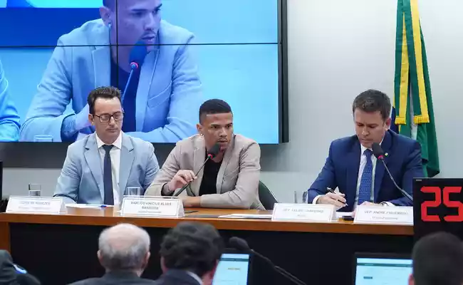

Apostas: jogador banido diz que atletas de Cruzeiro e Galo estão envolvidos
Durante depoimento nesta terça-feira (20) na Comissão Parlamentar de Inquérito (CPI) da Câmara dos Deputados que investiga manipulação em jogos de futebol, um dos principais nomes citados no escândalo alegou que atletas de três dos principais clubes do país estavam envolvidos em esquemas.
Marcos Barreira, apelidado de Romário, era jogador do Vila Nova-GO, e a partir de um relato dele, o Ministério Público de Goiás (MP-GO) deflagrou a primeira fase da Operação Penalidade Máxima. Romário foi convidado a depor pela CPI sobre seu envolvimento nas ações e negou que teria recebido dinheiro de aliciadores para cometer ações que poderiam fraudar jogos. Quando perguntado se teria conhecimento de outros jogadores que participariam de esquemas, o volante falou que não sabia de nomes, mas que alguns clubes foram citados. - De Goiás, não. Mas de outros estados, sim. Jogadores não chegaram a falar nomes, mas falaram dos clubes. Cruzeiro, Avaí, Santos e, na época, Atlético Mineiro. Eles chegaram a falar e me mandar vídeo dos caras - afirmou Romário durante o depoimento.
